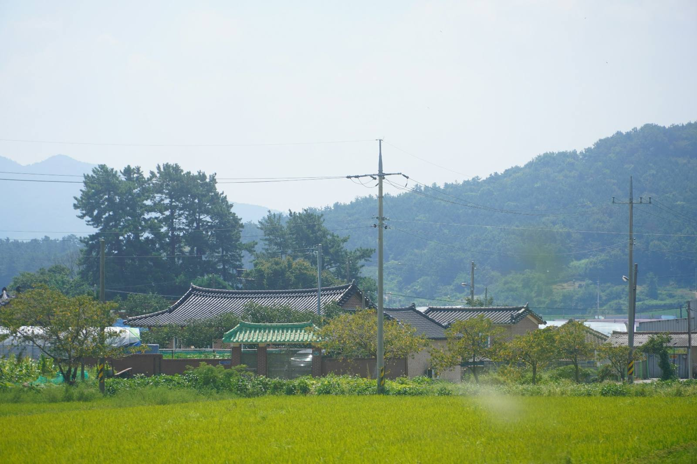

귀농·귀촌 준비
빈집 고쳐서 들어가기
빈집 사기 전에 집 상태를 같이 봐 달라는 분도 계십니다. 그럴 때도 같이 가 드립니다.
사기 전에 같이 보기
충남 홍성에서 시골집 고치기 15년 · 예산 · 청양 · 보령까지
농가주택 단열·창호·지붕, 재래식 부엌·화장실 입식으로, 기름보일러 교체. 견적은 현장에 가서 보고 드립니다.
전화 010-0000-0000 · 일요일은 쉽니다
귀농·귀촌 준비
빈집 사기 전에 집 상태를 같이 봐 달라는 분도 계십니다. 그럴 때도 같이 가 드립니다.
사기 전에 같이 보기멀리 사는 자녀
공사 중에는 사진을 찍어 카톡으로 보내 드립니다.
누가 고치나요혼자 사시는 어르신
견적은 현장에 가서 보고 드립니다. 현장 보러 가는 건 돈 받지 않습니다.
전화 010-0000-0000해당되는지, 얼마인지, 올해 접수하는지는 해마다 바뀌고 시·군마다 달라요. 꼭 시·군청이나 읍·면사무소에 확인하세요. 섬돌집고침이 지원 여부를 정하거나 약속하지 않습니다. (공식 누리집 기준, 2026-10-22 확인)
입력한 내용은 이 화면에서만 쓰이고 어디에도 저장되지 않습니다.
집 사기 전에
"빈집 사기 전에 집 상태 같이 봐 달라는 분도 계신데, 그것도 같이 가 드립니다."— 박섬돌 대표
사장님께 확인 후 채울 내용
비용: 무료 / ○만원 · 보는 곳: 지붕·기둥·바닥·습기·화장실·보일러 등
드리는 것: 말로 설명 / 사진 메모 / 대략 비용 범위 · 한계: 뜯어 봐야 아는 곳에 대한 안내
누가 고치나요
멀리 계신 가족께
"멀리 사시는 자녀분들이 좋아하십니다."— 박섬돌 대표
사진 보내는 횟수·방식 (예: 매일 / 단톡방)
실제 보고 카톡 캡처 1장 (손님 동의, 얼굴·주소 가림)
두 분 사진 (작업복, 현장) — 실제 사진을 받으면 넣습니다. 참고 이미지로 대신하지 않습니다.
진행 순서와 비용
집 위치와 고칠 곳을 알려 주세요. 일요일은 쉽니다.
집에 직접 가서 봅니다. 현장 보러 가는 건 돈 받지 않습니다.
현장을 보고 견적을 드립니다.
견적에 공사 범위(배관·전기 포함 여부) 적는지
공사 중에는 사진을 찍어 카톡으로 보내 드립니다.
견적 보러 현장에 가는 비용
받지 않습니다
견적
현장을 보고
| 공사 | 비용 범위 | 보통 기간 |
|---|---|---|
| 재래식 화장실 입식 개조 | ○백만~○백만 원 | ○일 |
| 기름보일러 교체 | ○백만 원~ | ○일 |
| 슬레이트 지붕 교체 (철거 별도) | ○백만~ | ○일 |
| 단열·창호 (집 전체) | ○천만 원~ | ○주 |
사장님께 실제 견적 기준의 범위와 공개 여부, 추가 비용이 생길 때 처리 방식을 받으면 채웁니다.
고친 집
고치기 전·후 사진 + 날짜 · 면 단위 지역 · 공사 범위(배관·전기 포함 여부까지) · 기간 · 비용 범위
실제 사진과 내용을 받으면 사례 3건으로 만듭니다. 지어낸 사례는 넣지 않습니다.
자주 묻는 질문
손님 중에 시골에 부모님 집이 있는 자녀분들이 많습니다. 공사 중에는 사진을 찍어 카톡으로 보내 드립니다.
현장 보러 가는 건 돈 받지 않습니다. 견적은 현장을 보고 드립니다.
홍성, 예산, 청양, 보령까지 다닙니다.
그 밖의 지역: 가능 여부 확인
슬레이트 철거는 허가받은 업체가 하고, 섬돌집고침은 새 지붕을 올립니다.
참고로, 법에서는 석면이 든 슬레이트를 고용노동부에 등록된 석면해체·제거업체가 해체·제거해야 하는 경우가 있습니다(산업안전보건법 제122조). 철거·처리 비용을 지원하는 "슬레이트 처리 지원사업"은 집이 있는 시·군청에 문의하세요. 제도 설명 (대한민국 정책브리핑)
지원 여부는 시·군청이 정합니다. 위의 "우리 집 상태 정리하기"에서 고르시면, 확인해 볼 제도 이름과 묻는 곳, 공식 안내 링크를 보여 드립니다.
네, 같이 가 드립니다.
비용·보는 곳: 사장님 확인 후 작성
일요일은 쉽니다. 평일·토요일 연락 시간: ○시~○시
A/S(하자 처리) 기준 — 사장님 확인 후 작성
전화